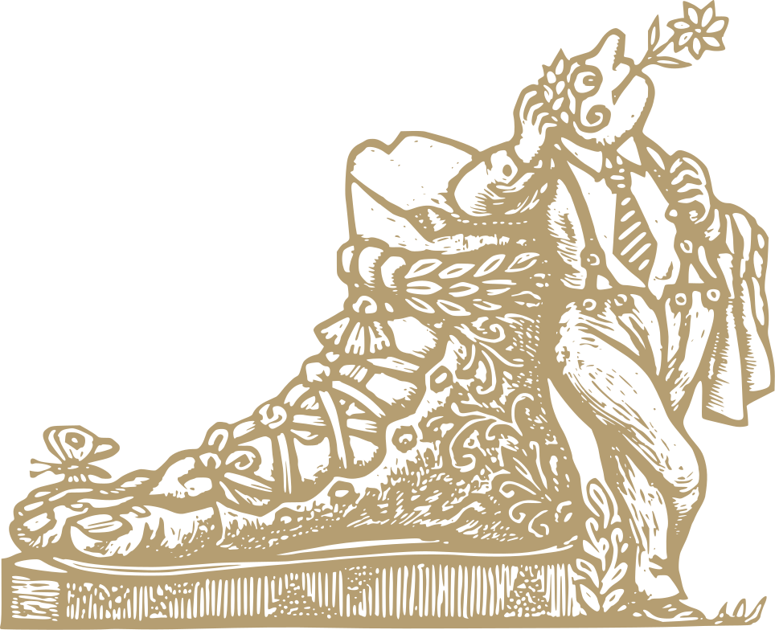

L’epitafi de la Tomba al Soldat Desconegut a Moscou, al costat del Kremlin, diu quelcom així: “El teu nom és desconegut, la teva gesta és immortal.”. Visitant, també el teu nom és desconegut però, a diferència del soldat, la teva visita passarà absolutament inadvertida.
arnau.org pertany a una família, el cognom de la qual coincideix amb el nom del domini, —sense l’extensió, no cal dir-ho—. Els membres d'aquesta família utilitzen el servei de correu electrònic vinculat al domini, per a comunicar-se entre ells i amb la resta del món (urbi et orbi).
Cal entendre aquest web, doncs, com un gest de cortesia cap els curiosos que el visiten. Res més.
